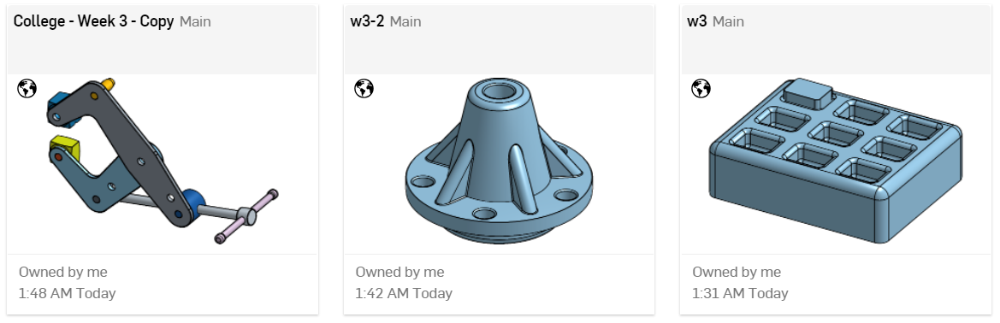

3D Modeling - Multi-Part Part Studio
本周實作題目

學習要點
使用布林運算
運用線性與圓形圖案
介紹一個能同時上下運動的設計
在Part Studio中繪畫出多部件設計
托盤 - 用於線性圖案
噴嘴 - 用於圓形圖案
BU35 - 一個懸臂夾具
Onshape操作影片
於PDF講義中不懂的英單 : (單字後反白含有中文連結
cantilever-37
tray-38
nozzle-39
manipulate-40
versatile-41
typo-42
cosmetic-43
fixture-44
approach-45
subtract-46
tolerances-47
multiple-48
hierarchy-49
typically-50
intuitive-51
tackle-52
parametrically-53
foresight-54
tradeoff-55